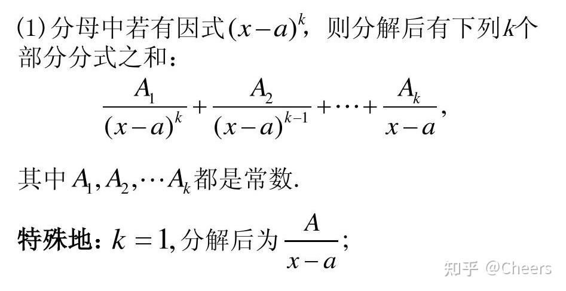
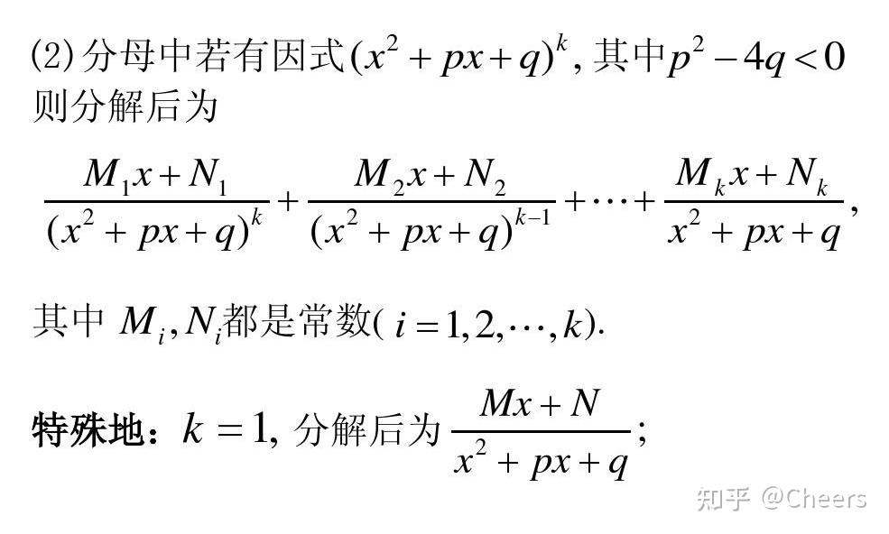

三大招轻松快速解决有理函数积分的拆解
Author: [Cheers]
Link: [https://zhuanlan.zhihu.com/p/411502030]
有理函数积分拆分方法总结
定义 形如 ∫Qm(x)Pn(x)dx(n<m) 的积分称为有理函数的积分, 其中 Pn(x),Qm(x) 分别是 x 的 n 次多项式和 m 次多项式。 方法 先将 Qm(x) 因式分解, 再把 Qm(x)Pn(x) 拆成若干干最简有理分式之和。
这里的思想就是化整为零，化繁为简，然后逐个击破，因为化成的分式很容易求得其积分值
这里注意有理函数拆分时应化为真分式，且分母最高次项系数为1的情况。
分类：
- 单根情况
- 重根情况
- 复数根
以上是有理函数积分中遇到的所有情况。

这是单根和重根的拆分规律

这是复数根的拆分规律
下面通过例子来说明如何拆分
1、单根情况
例1： x2−5x+6x+1 按照有理函数拆分原则将该分式拆为：
x2−5x+6x+1=(x−2)(x−3)x+1=x−2A+x−3B(1)
那么如何快速确定A、B的值呢？我们先以求解A为例，最后再总结一下规律。
首先等式两端同乘以A的分母,化成如下式子
(x−3)x+1=A+x−3B(x−2)(2)
然后令X=2,B那一项就等于0了，可以得到
A=2−32+1=−3(3)
同理求B。
下面总结一下单根的情形。
(x−a)(x−b)1=x−aA+x−bB
计算A值时，将左式中的分母划去右式中A系数所表示的分母 x−a ，并代入a值，即 A=x→alimx−b1
计算B值时，将左式中的分母划去右式中B系数所表示的分母 x−b ，并代入b值，即 B=x→blimx−a1
2、重根情况
例2: 拆分 (x+1)3x1 按照有理函数拆分原则将该分式拆为:
(x+1)3x1=x+1A1+(x+1)2A2+(x+1)3A3+xB1(4)
这里有四个未知数，我们先来观察左边的式子，左边分母中是 (x+1)3 和 x 的组合，正好是 A3 和 B1 的分母，所以这两个未知数，可以应用上面的方法，两边等式同乘以分母，我们就只举例算一个 A3
两边同乘 (x+1)3 ，得到等式
x1=x+1A1(x+1)3+(x+1)2A2(x+1)3+A3+xB1(x+1)3(5)
此时令 x=−1 ，其余项都为0，只剩 A3=−1
同理，我们可以直接口算求得出 B1 =1
那么 A1 和 A2 如何计算呢？
首先我们肯定不能用上面的方法了，因为这样左式的分母消灭不完，使得它分母为0没有意义。
这时我们可以考虑运用极限的思想，比如我们计算 A1 时，我们在等式两端同乘 x ，然后令等式两端的 x 均趋向于 +∞
由此等式化简为
(x+1)31=x+1A1x+(x+1)2A2x+(x+1)3A3x+B1(6)
0=A1+B1(7)
已知 B1=1 ,可求得 A1=−1
这样我们还剩下最后一个未知数 A2 ，我们先来尝试一下上面的这种做法
计算 A2 时，在等式两边同乘 x2 ，并令 x 均趋向于 +∞
由此将等式
(x+1)3x1=x+1A1+(x+1)2A2+(x+1)3A3+xB1(4)
化简为
(x+1)3x=x+1A1x2+(x+1)2A2x2+(x+1)3A3x3+B1x(9)
此时如果令 x→+∞ 是计算不出来结果的。
这时可以采用另一种方法—特值法，令 x 为一个特定整数，因为此时只有一个未知数，所以很好求解，例如这两个式子，我们可以令 x=1 ,并且将求解得出的 A1 、 A3 、 B1 带入等式中。
81=2−1+4A2−81+1(10)
解得 A2=−1
因此，当上述常规操作没有办法的时候，利用特值法可以灵活地求解。
3、复根情况
例3: 拆分 (2x+1)(x2+x+1)x+2
按照部分分式原则，该有理分式可拆分为,
(2x+1)(x2+x+1)x+2=2x+1A+x2+x+1Bx+C(11)
观察等式左边的式子中含有A的分母 2x+1 ,因此还是等式两边同乘 2x+1 ，可得等式
(x2+x+1)x+2=A+x2+x+1(Bx+C)(2x+1)(12)
令 x=−21 ,带入等式求解可得 A=2
接下来主要求解 B 和 C
求解B我们可以利用 x→+∞ 的方法，等式两边同乘x；
(2x+1)(x2+x+1)(x+2)x=2x+1Ax+x2+x+1(Bx+C)x(13)
令 x→+∞ ，等式化为
0=2A+B(14)
解得 B=−2A=−1 ;
最后的一个未知数 C ,我们祭出大招—特值法，找一个简单的数带入，通过观察，我们令 x=0 ，将等式化简为
2=A+C(15)
解得 C=A−2=0
总结
一、观察有理函数根的情况，属于是单根还是重根还是复数根，根据拆分规则正确拆分
二、求解拆分的未知数时，主要考虑三种方法
- 两边同乘某个未知数的分母，然后令x取能让其未知数分母为0的值
- 等式两边同乘x，令x→+∞
- 特值法（最后的大招）
有关有理函数的拆分分享方法到这里结束了，下面准备更新自动控制理论的离散部分还有机器学习相关的知识点。
感谢大家耐心的读到这里，如果对你有所帮助，请记得点赞和收藏！
评论区看到有个同学出了个综合的题目，其实方法也是一样的，我在这里当做附加题，重新应用下上面的方法。
(x2+1)(x2+x)1=xA+x+1B+x2+1Cx+D
首先根据根的类型，拆分为上述的式子，然后A和B的计算方法，可以使用第一种方法，口算既可得出 A=1,B=−21 。而对于 C 的求解，可以两边乘以 x ，然后令其趋向于无穷，得到 A+B+C=0, 求解出C值，最后的D采用特值法，令x=1既可求出。题目很多，掌握方法就行，具体结果过程就不详细列了。